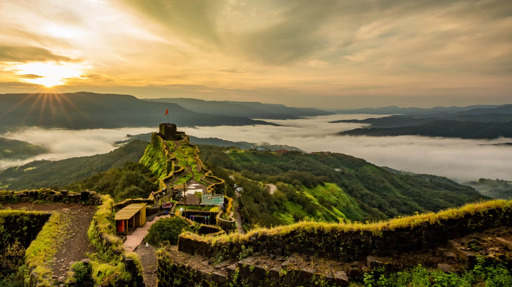
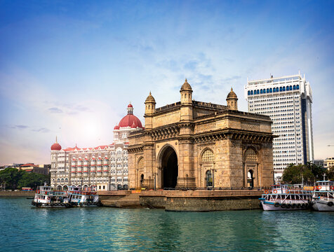
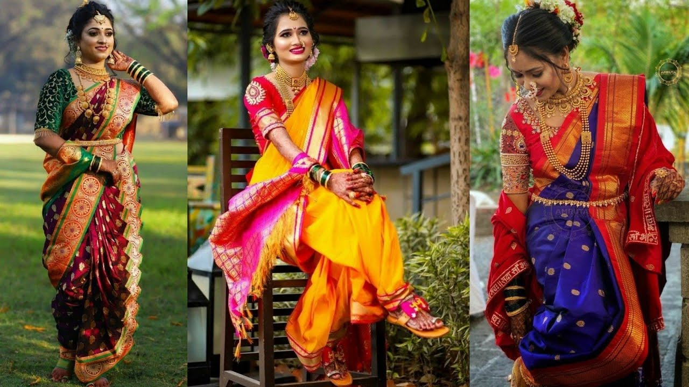
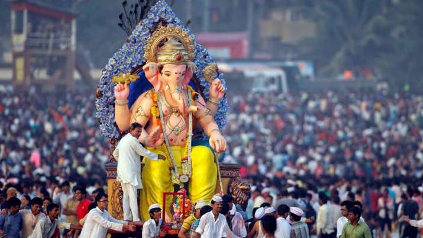

╰┈➤Maharashtra Information
| ✧ Aspect | Information |
|---|---|
| ✧ Capital | Mumbai |
| ✧ Chief minister | Ajit Pawar |
| ✧ Largest City | Mumbai |
| ✧ Districts | 36 |
| ✧ Official Language | Marathi |
| ✧ Other Language | Hindi,English |
| ✧ Population | Approximately 114 million |
| ✧ Area | 307,713 square kilometers |
| ✧ Major Rivers | Godavari, Krishna, Tapi |
| ✧ Major Industries | Textiles, Chemicals, Pharmaceuticals, Automobiles |
| ✧ Popular Places | Gateway of India, Elephanta Caves, Ajanta and Ellora Caves, Shirdi Sai Baba Temple |
╰┈➤Traditional dresses of Maharashtra
Traditional attire in Maharashtra includes the dhoti, and pheta for men, while a choli and nine-yard saree locally known as Navwari saree for women. Traditional attire is becoming rarer with trousers and shirts for males and five yard saree or salwar kameez for females as the popular replacements.
╰┈➤History of Maharashtra
Maharashtra, located in the western region of India, has a rich historical heritage dating back to ancient times. The land has witnessed the rise and fall of numerous dynasties and empires, contributing to its diverse cultural tapestry.
The early history of Maharashtra is marked by the rule of various indigenous dynasties such as the Satavahanas, Vakatakas, and Rashtrakutas. These kingdoms played a significant role in shaping the cultural and political landscape of the region.
Maharashtra's prominence increased during the medieval period with the emergence of powerful kingdoms like the Yadavas of Devagiri and the Seuna (Yadava) dynasty. However, it was the establishment of the Maratha Empire under the leadership of Shivaji Maharaj that truly transformed the region.
Shivaji Maharaj's reign marked a period of resurgence for Marathi people, characterized by his military exploits, administrative reforms, and promotion of Marathi culture and language. The Maratha Empire continued to expand under his successors, notably the Peshwas, who became the de facto rulers of the empire.
The British East India Company gradually annexed territories in Maharashtra, leading to the decline of Maratha power. Maharashtra played a crucial role in India's struggle for independence, with leaders like Bal Gangadhar Tilak, Gopal Krishna Gokhale, and Dr. B. R. Ambedkar leading various movements.
After India gained independence in 1947, Maharashtra became a state of the Indian Union. Mumbai, the capital city, emerged as the financial and commercial hub of the country. Today, Maharashtra is known for its vibrant culture, literature, music, and cinema, making it one of the most dynamic states in India.
Thank you
╰┈➤Maharashtra Pictures




